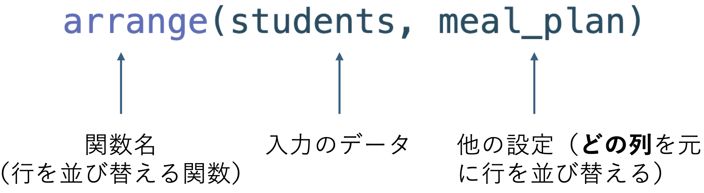

第4回：データの整理（１）
クイズ
連絡事項
宿題に答える際は「Submit Answer」を忘れないように！
前回欠席した方はMoodleから
students_analysis.zipをダウンロードしてください
データの整理（Data Wrangling）
データが手に入ると、まだ解析に使えない状態であることが多いです。
データの整理（「wrangling」）は解析に使えるように整えるプロセスです。
- 元々はカウボーイが牛を扱う技術から来ています。

Getty Images

Image by Allison Horst
準備
students_analysisプロジェクトを再度開きます。
新しいコマンドの勉強に進む前に、今までのスクリプトを少し変更したいと思います。
先のスライドで説明したように、データ解析を行う前にデータの整理が必要なケースが多いです。
今回の
students.csvに入っているデータもその一例です。
- そこで、
students.csvを読み込む際には、まずstudents_rawという名前にしましょう。rawはこれが生データ（読み込んだデータのまま、何も手を加えていない状態）を示します。
データ整理の関数
これから学ぶ関数の共通点：
- データフレームを入力とし、データフレームを返す
- 最初の引数が入力のデータフレーム
- 他の引数は詳細（引数名に引用符を使わない）
関数(データフレーム, 他の設定) ➞ データフレーム
データの整理：列名を整える
データフレームの列名は任意ですが、使いやすい名前には以下の特徴があります：
- 打ちやすい
- 覚えやすい
`Full Name`は打ちづらいです。`もありますし、スペースも入っています。おすすめ：小文字のみを使用し、スペースの代わりに
_を使う
rename()で列名を変える
rename()は列名を変更する関数です。新しい名前 = 前の名前と指定します。
# A tibble: 6 × 5
`Student ID` full_name favourite.food mealPlan AGE
<dbl> <chr> <chr> <chr> <chr>
1 1 Sunil Huffmann Strawberry yoghurt Lunch only 4
2 2 Barclay Lynn French fries Lunch only 5
3 3 Jayendra Lyne N/A Breakfast and lunch 7
4 4 Leon Rossini Anchovies Lunch only <NA>
5 5 Chidiegwu Dunkel Pizza Breakfast and lunch five
6 6 Güvenç Attila Ice cream Lunch only 6 # A tibble: 6 × 5
`Student ID` full_name favourite.food mealPlan AGE
<dbl> <chr> <chr> <chr> <chr>
1 1 Sunil Huffmann Strawberry yoghurt Lunch only 4
2 2 Barclay Lynn French fries Lunch only 5
3 3 Jayendra Lyne N/A Breakfast and lunch 7
4 4 Leon Rossini Anchovies Lunch only <NA>
5 5 Chidiegwu Dunkel Pizza Breakfast and lunch five
6 6 Güvenç Attila Ice cream Lunch only 6 - 注意：このようにしただけでは、元のデータは変わっていません。
<-を使わない限り、関数の結果は保存されません。
チャレンジ ①
`Student ID`という列を使いやすい列名に変更してください。
rename()で列名を変える
- 複数の列名を変更する際は、コンマで区切って書きます。
# A tibble: 6 × 5
student_id full_name favourite.food mealPlan AGE
<dbl> <chr> <chr> <chr> <chr>
1 1 Sunil Huffmann Strawberry yoghurt Lunch only 4
2 2 Barclay Lynn French fries Lunch only 5
3 3 Jayendra Lyne N/A Breakfast and lunch 7
4 4 Leon Rossini Anchovies Lunch only <NA>
5 5 Chidiegwu Dunkel Pizza Breakfast and lunch five
6 6 Güvenç Attila Ice cream Lunch only 6 一気に列名を扱いやすくする
名前を一つずつ変更するのは手間がかかります。
clean_names()という関数が列名を一気にきれいにしてくれます。- この関数は
tidyverseに含まれていないパッケージ、janitorに入っているため、まずはjanitorをロードする必要があります。
- この関数は
# A tibble: 6 × 5
student_id full_name favourite_food meal_plan age
<dbl> <chr> <chr> <chr> <chr>
1 1 Sunil Huffmann Strawberry yoghurt Lunch only 4
2 2 Barclay Lynn French fries Lunch only 5
3 3 Jayendra Lyne N/A Breakfast and lunch 7
4 4 Leon Rossini Anchovies Lunch only <NA>
5 5 Chidiegwu Dunkel Pizza Breakfast and lunch five
6 6 Güvenç Attila Ice cream Lunch only 6 これをstudents_renamedとして保存しましょう。
mutate()で列の中身を変える
「mutate」は「変化させる」という意味です。
ageは数字のはずですが、文字として読み込まれてしまいました。修正しましょう。
# A tibble: 6 × 5
student_id full_name favourite_food meal_plan age
<dbl> <chr> <chr> <chr> <dbl>
1 1 Sunil Huffmann Strawberry yoghurt Lunch only 4
2 2 Barclay Lynn French fries Lunch only 5
3 3 Jayendra Lyne N/A Breakfast and lunch 7
4 4 Leon Rossini Anchovies Lunch only NA
5 5 Chidiegwu Dunkel Pizza Breakfast and lunch NA
6 6 Güvenç Attila Ice cream Lunch only 6parse_number()は文字列を数字に変換する関数です。Warning: 1 parsing failureという注意が出ました。これは、データの中にうまく数字に変換できなかった値があったことを意味しています。本当は修正した方が良いですが、少し上級な話になりますので今回は飛ばします。詳しく知りたい方は教科書を読んでいただくか、講義後に質問してください。
きれいなデータを保存する
- これでデータが（ほとんど）整いましたので、
studentsとして保存します。
arrange()で行を並び替える
arrange()は行の順序を並び替える関数です。- 食事プラン（「
meal_plan」）の順に並び替えましょう。
- 食事プラン（「
# A tibble: 6 × 5
student_id full_name favourite_food meal_plan age
<dbl> <chr> <chr> <chr> <dbl>
1 3 Jayendra Lyne N/A Breakfast and lunch 7
2 5 Chidiegwu Dunkel Pizza Breakfast and lunch NA
3 1 Sunil Huffmann Strawberry yoghurt Lunch only 4
4 2 Barclay Lynn French fries Lunch only 5
5 4 Leon Rossini Anchovies Lunch only NA
6 6 Güvenç Attila Ice cream Lunch only 6
arrange()で行を並び替える
デフォルト設定では、
arrange()は小さい方から大きい方へと並び替えます。逆の順にするには、列名を
desc()の中に書きます。
# A tibble: 6 × 5
student_id full_name favourite_food meal_plan age
<dbl> <chr> <chr> <chr> <dbl>
1 1 Sunil Huffmann Strawberry yoghurt Lunch only 4
2 2 Barclay Lynn French fries Lunch only 5
3 4 Leon Rossini Anchovies Lunch only NA
4 6 Güvenç Attila Ice cream Lunch only 6
5 3 Jayendra Lyne N/A Breakfast and lunch 7
6 5 Chidiegwu Dunkel Pizza Breakfast and lunch NAチャレンジ ②
学生の名前の順に並び替えてください。
filter()で行を絞り込む
生データが必要以上に多い場合がよくあります（特に「ビッグデータ」を扱っているとき）。
filter()で条件を設定し、その行だけに絞り込みます。
# A tibble: 3 × 5
student_id full_name favourite_food meal_plan age
<dbl> <chr> <chr> <chr> <dbl>
1 1 Sunil Huffmann Strawberry yoghurt Lunch only 4
2 2 Barclay Lynn French fries Lunch only 5
3 3 Jayendra Lyne N/A Breakfast and lunch 7- 行の数が変わったことを確認できますか？
データの比較
データの比較を行う主な記号：
>より大きい<より小さい==イコール（=ではありません！）|あるいは&そして（複数条件の指定）
比較の記号のアウトプットは論理ベクトルです。
まとめ
- データを読み込んだ後、整える必要があります。
rename()は列の名前を変更する。arrange()は行を並び替える。mutate()は列の中身を変える。filter()は行を絞り込む。